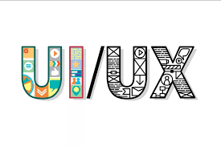

Sizga taklif etiladigan kurslar
Biz uchun har bir mijoz qadrli



222
UX/UI dizayn
Kelajakka yo'naltirilgan ta'lim
Hozirgi kunda, juda ko‘p joylarda «IT» so‘zini uchratishimiz mumkin, xo‘sh bu so‘z o‘zi nima? IT — ingliz tilidan olingan «Information Technology» so‘zlarining qisqartmasi bo‘lib, o‘zbek tilida «Axborot texnologiyalari» deb yuritiladi. Shunday bo‘lsa ham, biz bu so‘zni IT ko‘rinishida talaffuz qilamiz va ishlatamiz. Navbatdagi savol, «Information Technology» nima degani? Information Technology bu — axborotni hosil qilish, uni yig‘ish, tarqatish, saqlash, qayta ishlash, himoyalash kabi vazifalarni bajaruvchi hisoblash texnikasidir. Hozirgu kunda hisoblash texnikasi vazifasini kompyuter bajarmoqda, shunday ekan IT so‘zi ishlatilganda asosan kompyuter texnologiyasi tushuniladi. IT so‘zini ishlatganda bir narsaga e’tibor bering, hech qachon «IT texnologiyalari» deb gapirmang, sababi, agar bu gapingizni to‘liq to‘g‘ri yozadigan bo‘lsak »Information Technology» texnologiyalari, yoki o‘zbekchaga o‘girsak «Axborot texnologiyalari texnologiyalari» ko‘rinishida namoyon bo‘ladi, bu sal g‘alati bo‘lsa kerak.
Biz uchun har bir mijoz qadrli
Copyright © 2018-2021 National PR-centre